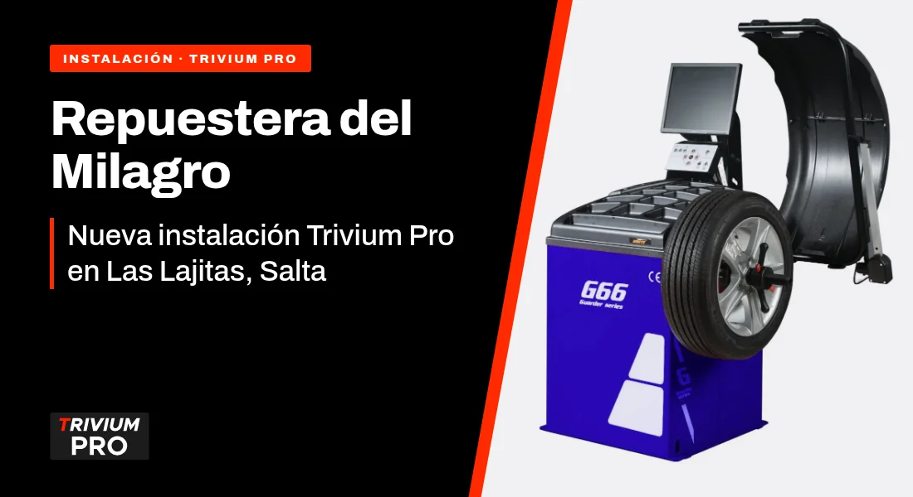

En Trivium Center seguimos recorriendo el país para acompañar el crecimiento de talleres y concesionarias. Esta vez llegamos a Las Lajitas, Salta, donde realizamos una instalación completa para Repuestera del Milagro, un nuevo taller que apuesta por la tecnología y la eficiencia.
Durante la jornada de montaje, nuestro equipo técnico instaló y puso en funcionamiento el siguiente equipamiento:


🛠 Elevador de tijera Trivium Pro
Ideal para alineación y tareas rápidas de inspección. Su diseño compacto y robusto permite ahorrar espacio y garantiza un trabajo seguro. Incluye sistema hidráulico sincronizado y doble cilindro por plataforma.
🛠 Elevador de 2 columnas Direct Lift DL9
Un clásico para trabajos generales de mecánica. Ofrece capacidad de carga de 4 toneladas, brazos asimétricos de rápida extensión y sistema de seguridad automático. Su altura libre de paso lo hace ideal para vehículos altos.
⚙ Balanceadora Trivium Pro G-66
De operación electrónica, con pantalla digital y medición automática de distancia y diámetro. Es precisa, rápida y muy fácil de calibrar. Permite trabajar con llantas de acero y aleación, cubriendo vehículos livianos y utilitarios.
⚙ Desarmadora Trivium Pro
Con brazo asistente y cabezal protector, esta desarmadora permite trabajar con ruedas de autos y camionetas sin dañar las llantas. Es resistente, versátil y se adapta a cubiertas de perfil bajo o run-flat.
📐 Alineadora 3D Hofmann Geoliner 360
Una de las mejores del mercado, equipada con cámaras de alta resolución, lectura sin contacto y software de alineación intuitivo. El sistema detecta y corrige desviaciones con máxima precisión, reduciendo tiempos y errores.


Esta instalación no solo equipa al taller con tecnología de primer nivel, sino que también mejora su productividad, seguridad y atención al cliente. Cada uno de los equipos fue elegido para ofrecer un servicio completo en alineación y neumáticos.
En Trivium Center trabajamos con compromiso en cada proyecto, desde la elección del equipamiento hasta la capacitación en el uso de las máquinas. Nuestra línea Trivium Pro, importada de China, está diseñada para ofrecer una excelente relación costo-beneficio, con respaldo local y asistencia técnica.